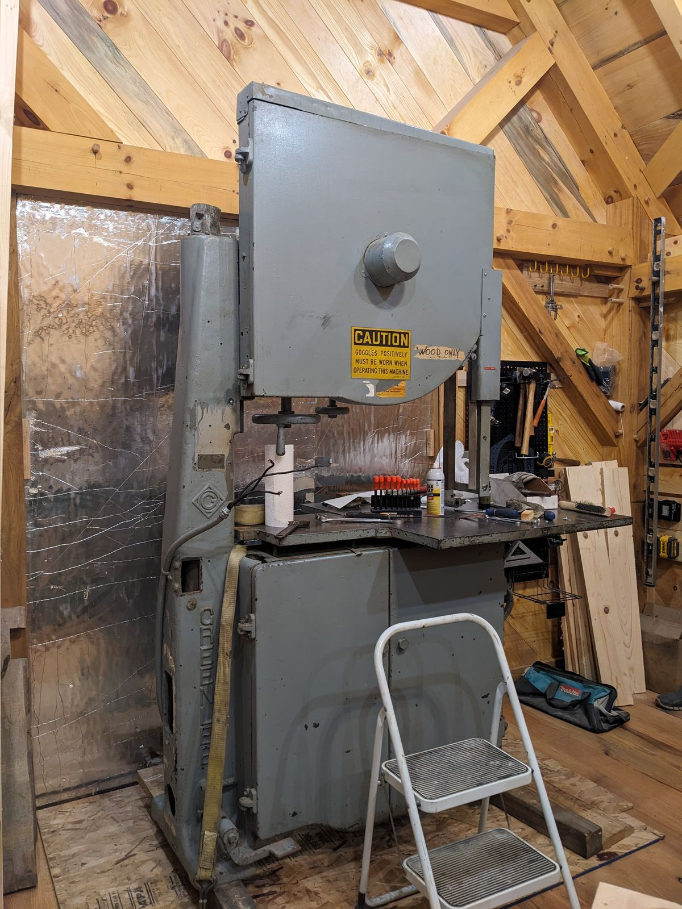
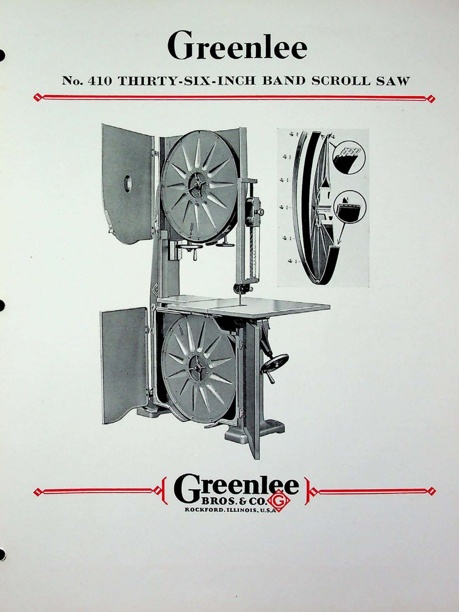

No. 410 36″ Band Saw
Resawing & curved work · 400-Series · Acquired April 2024

The machine
A band saw runs a continuous loop of steel over two large wheels, so the cut is always moving down into the table — no reciprocating, no slap, just an endless blade. Wheel diameter is the measure of the breed, and thirty-six inches puts the 410 in serious company: deep resawing of thick stock, and the long sweeping curves that no straight blade can follow. It is the machine you want when the work is a curved timber brace — which, in a timber frame workshop, is not a hypothetical.
This example
The 410 is the collection’s newest arrival, acquired in April 2024 and moved — in one long day that ended well after midnight — into the loft of the Workshop, where it now stands beneath the pegged roof. Its serial number and build date are still being traced, and its restoration is next in the queue. The photographs from moving day are being catalogued and will appear below.
There is a pleasing circularity to where it landed: a machine built for cutting curved braces, waiting out its restoration under a curved-braced roof.
From the Catalog

“In addition to being a general-purpose saw for all kinds of woodwork, it is an economical machine for cutting sheet metal, casting sprues, cloth, meat and numerous composition materials… Its rugged design and dependable tension make it especially suitable for the unusual job.” Greenlee Bulletin No. 410 · July 1937
- Wheels
- 36″ dia. × 2″ face
- Main table
- 36″ × 36″
- Net weight
- 2,400 lbs
Catalog scan courtesy of VintageMachinery.org.